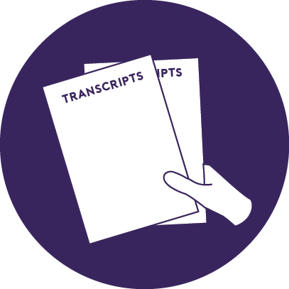

This is the World History portion of my project. In World History, we were assigned to interview anyone above the age of 21. With this interview, we had to highlight the main points of the discussion. Whether it be a negative or positive connotation. This was our form of coding the transcript. The main points of our interview were placed and explained on a map. This fraction of m my project taught me to analyze key features and understand people for more than what they present.
Linked to the photo below is the transcript of my interview.
Linked to the photo below is the audio file of my interview.
Linked to the photo below is the map I created.